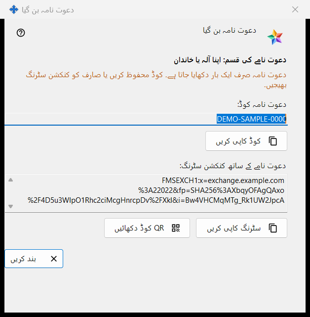
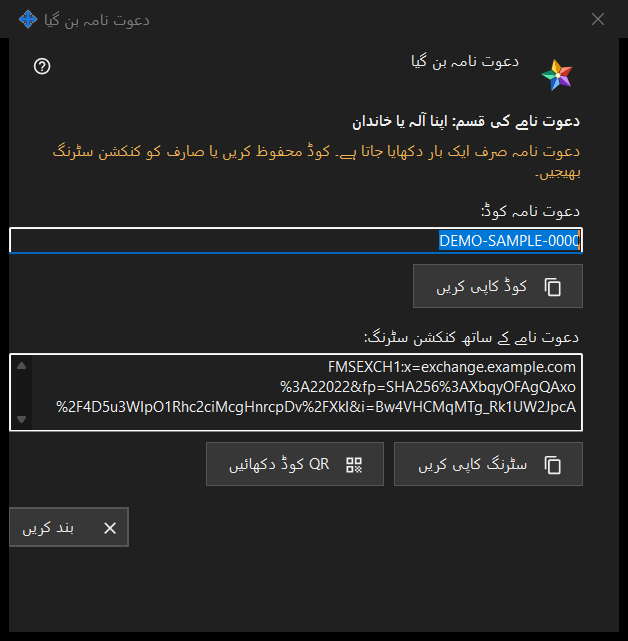

دعوت نامہ بن گیا
یہ کس مقصد کے لیے ہے
یہ ونڈو دعوت نامہ بنائیں ونڈو میں بنائیں دبانے کے فوراً بعد نیا دعوت نامہ صرف ایک بار دکھاتی ہے۔ اس میں ایک بار استعمال ہونے والا کوڈ ہوتا ہے اور، جب ایکسچینج سرور پروگرام اسے بنا سکے، ایسی کنکشن سٹرنگ بھی جس میں کوڈ پہلے سے شامل ہے۔


اس ترتیب میں
- وہ سطر دیکھیں جو دعوت نامے کی قسم: سے شروع ہوتی ہے اور منتخب کردہ قسم جانچ لیں۔
- کوڈ کاپی کریں دبائیں، یا دعوت نامے والی سٹرنگ کے لیے سٹرنگ کاپی کریں، یا QR کوڈ دکھائیں۔
- اسے کسی قابل اعتماد ذریعے سے اس شخص کو دیں۔
- بند کریں دبائیں۔ وہی کوڈ دوبارہ نہیں دکھایا جاتا۔
عناصر
قسم اور انتباہ
گاڑھے حروف والی سطر منتخب کردہ قسم بتاتی ہے، جیسے دعوت نامے کی قسم: اپنا آلہ یا خاندان۔ ونڈو بند ہونے پر کوڈ اور سٹرنگ اس سے مٹ جاتے ہیں۔ ان میں سے کوئی کھو جائے تو فہرست میں دعوت نامہ واپس لیں اور نیا بنائیں۔ انتباہی رنگ کی سطر کہتی ہے: دعوت نامہ صرف ایک بار دکھایا جاتا ہے۔ کوڈ محفوظ کریں یا صارف کو کنکشن سٹرنگ بھیجیں۔
دعوت نامہ کوڈ
دعوت نامہ کوڈ: صرف پڑھنے والا خانہ ہے جس میں کوڈ دکھائی دیتا ہے۔ بٹن کوڈ کاپی کریں اسے خفیہ چیز کی طرح کاپی کرتا ہے، Windows کلپ بورڈ ہسٹری (Win+V) اور کلاؤڈ کلپ بورڈ سے بچا کر؛ نیچے کی سطر ان میں سے ایک دکھاتی ہے: دعوت نامہ کوڈ کلپ بورڈ پر کاپی ہو گیا۔ یا: کوڈ کلپ بورڈ پر کاپی نہیں کیا جا سکا۔
دعوت نامے کے ساتھ کنکشن سٹرنگ
دعوت نامے کے ساتھ کنکشن سٹرنگ: صرف تب نظر آتی ہے جب سٹرنگ بن سکی ہو۔ وہ سرور کا نام بتاتی ہے اور کوڈ ساتھ رکھتی ہے، اس لیے اسے کوڈ کی طرح سنبھالیں: بٹن سٹرنگ کاپی کریں اسے بھی خفیہ چیز کی طرح کاپی کرتا ہے۔ اس میں آپ کے اکاؤنٹ کا پاس ورڈ نہیں ہوتا۔
QR کوڈ
بٹن QR کوڈ دکھائیں دعوت نامے والی سٹرنگ کی تصویر کھولتا ہے۔ جو بھی اسے دیکھے وہ دعوت نامہ استعمال کر سکتا ہے، اس لیے اسے صرف اسی کو دکھائیں جس کے لیے یہ ہے۔ تصویر نہ بن سکے تو سطر کہتی ہے: QR کوڈ اس وقت دستیاب نہیں ہے۔
دوسرا شخص کیا کرتا ہے
ایکسچینج اکاؤنٹ ونڈو (سائن اِن..) میں شخص بٹن پیسٹ کریں سے سٹرنگ چسپاں کرتا ہے یا محفوظ فائل کھولتا ہے۔ دعوت نامے والی سٹرنگ ونڈو کو اندراج پر لے جاتی ہے: وہ لاگ اِن منتخب کرتا ہے، پاس ورڈ دو بار لکھتا ہے اور بٹن اکاونٹ بنائیں دباتا ہے۔ غلط یا پہلے استعمال ہو چکا دعوت نامہ، یا لیا جا چکا لاگ اِن، پیغام کے ساتھ مسترد کر دیا جاتا ہے۔
بند کریں
بٹن بند کریں ونڈو ختم کرتا ہے اور اس میں سے کوڈ اور سٹرنگ مٹا دیتا ہے۔ یہاں اور کچھ محفوظ نہیں ہوتا۔
مینیجر کی ترتیبات · SFTP اشتراک کی ترتیبات · ایکسچینج سرور کی ترتیبات